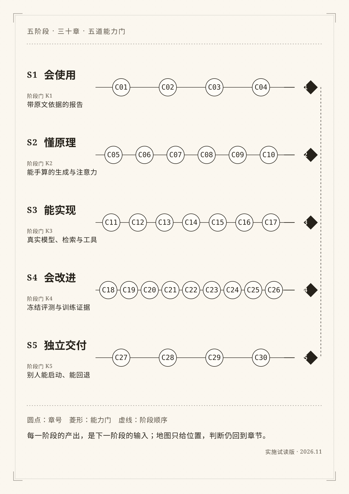

五阶段 · 三十章 · 五道能力门
全书地图
横线是阶段，圆点是章号，右侧菱形是能力门。地图只给位置；每一章的判断仍回到正文、图注和失败记录。

按阶段读
- S1 会使用 · K1C01 先做一份资料报告；C02 把任务交代清楚；C03 看似合理为什么仍可能错；C04 第一次独立交付
- S2 懂原理 · K2C05 一句话怎样逐步生成；C06 一串数字怎样表示文字；C07 注意力到底计算了什么；C08 怎样拼成一个 Transformer；C09 训练为什么能改变预测；C10 从续写到助手
- S3 能实现 · K3C11 从空目录运行第一段程序；C12 请求、响应和数据约定；C13 接上真实模型；C14 把自己的文档变成可追溯片段；C15 先找到资料，再组织答案；C16 让工具真的执行，并知道何时停；C17 组装资料助手第一版
- S4 会改进 · K4C18 先定怎样评，再动手优化；C19 检索没找对，还是回答没用对；C20 长上下文与记忆不是无限仓库；C21 什么时候需要 Agent；C22 质量、延迟和费用怎么取舍；C23 从数组走到自动微分；C24 从零组装最小 decoder；C25 何时适配参数，何时不该训练；C26 蒸馏学到的是什么
- S5 独立交付 · K5C27 图片、扫描件与多模态边界；C28 为新任务选择最小系统；C29 交给别人怎样才算交付；C30 不照抄案例的毕业项目